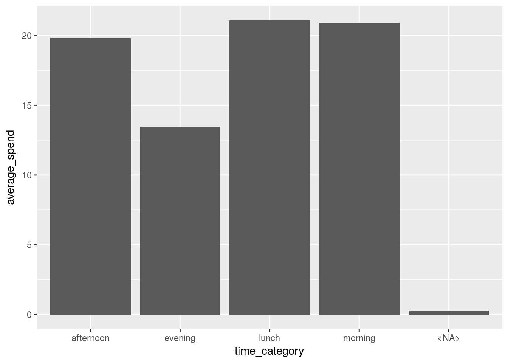
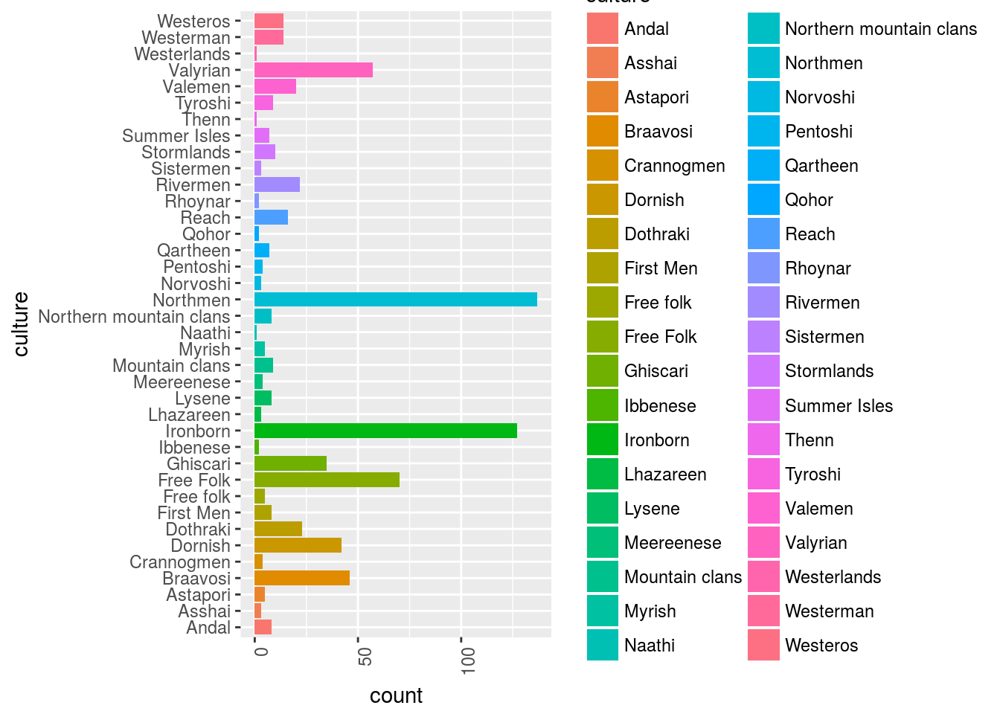
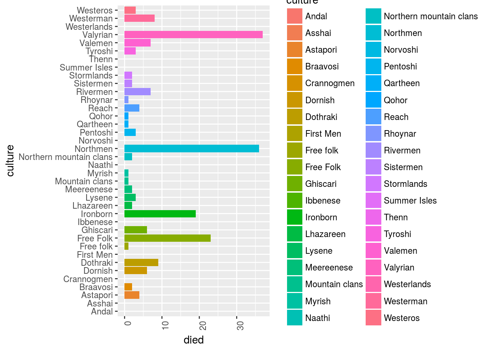

Data Wrangling
Why data-wrangling
If you can wrangle data into the proper form you can do anything with it…
Data-wrangling is absolutely essential for every data science task where we need to work with collected data.
A recent article from the New York Times said “Data scientists, according to interviews and expert estimates, spend from 50 percent to 80 percent of their time mired in the mundane labor of collecting and preparing data, before it can be explored for useful information.”
An excelent talk on data wrangling by Jenny Bryan:
https://www.youtube.com/watch?v=4MfUCX_KpdE
It is important to highlight the following facts;
- Excellent data wrangling skills will allow you to make R tools “flow” into one another.
- Different functions require different input formats and so do different solutions!
- The correct shape for the data will greatly simplify the stats needed to solve a problem.
- For example where you would have looped over data you can now simply aggregate
- For example where you would have repeated a model or visualization you now apply it over a hierarchy!
- Being data fluent will allow you to come up with innovative solutions!
The basics - tabular data examples
Here we will use an example of grocery store data.
Import data
What does the data look like?:
dummy_data <-
readRDS("../../static/data/data-wrangling/dummy_data.rds")
dummy_data %>% glimpse## Observations: 1,000
## Variables: 10
## $ customer_no <chr> "49ef700455a56debe3214598663330f6", "210d4179edb2...
## $ spend_month <dttm> 2012-12-01, 2012-12-01, 2012-12-01, 2012-12-01, ...
## $ store_counts <int> 1, 1, 1, 1, 1, 1, 1, 1, 1, 1, 1, 1, 1, 1, 1, 1, 1...
## $ visits_count <int> 1, 1, 1, 1, 1, 1, 1, 1, 1, 1, 1, 1, 2, 1, 1, 1, 1...
## $ item_sum <int> 1, NA, 6, 4, 1, 1, 1, NA, 4, 1, 1, 1, 1, 1, NA, 2...
## $ discount_sum <dbl> 0.00, 0.00, 4.05, 0.00, 0.00, 6.90, NA, 0.00, 10....
## $ spend_sum <dbl> 40.00, 15.90, 41.90, 117.96, NA, 43.25, 31.90, 18...
## $ spend_day <chr> "Fri", "Wed", "Wed", "Sun", "Fri", "Wed", "Wed", ...
## $ spend_time <chr> "afternoon", "afternoon", "evening", "lunch", "ev...
## $ spend_type <chr> "protein", "non_cash", "prepared_and_deli", "dair...Reshaping to answer a question
The basics
Widening
What if I asked you; “Show me the spend in each spend_time on a customer level”.
For a person and also for some models you will need to widen the data. By ‘widen’ we mean adding columns. Humans read better when you describe an obeservation using columns after all…
To widen this data we use the function tidyr::spread
dummy_data %>%
select(customer_no,spend_time,spend_sum) %>%
tidyr::spread(key = spend_time, value = spend_sum, fill = 0) ## # A tibble: 998 x 6
## customer_no afternoon evening lunch morning `<NA>`
## <chr> <dbl> <dbl> <dbl> <dbl> <dbl>
## 1 001dc4f17ad2f7999c215ac147ad9a13 0 0 0 93.0 0
## 2 0020cab9597c12589249daa13a1427a8 30.8 0 0 0 0
## 3 0068525ef1d0d392ad3e97602511551a 59.9 0 0 0 0
## 4 00d75bffda7ea469a511c891a28b2df2 0 0 25.0 0 0
## 5 011aec649b655991c2835f151188c54e 0 0 0 0 0
## 6 014dd528202b032a46564f63100ced5c 0 0 0 422 0
## 7 015392d5b1b6e0b63a4ca5ce1139d4ac 0 30.0 0 0 0
## 8 01948501615939ecb5a8c49af2ab45dd 0 0 0 13.0 0
## 9 01a86d2dba1514e5a92ecb38b408bbe8 43.8 0 0 0 0
## 10 0210fe573d0e13b2cd68cabe31d3a94c 0 0 7.90 0 0
## # ... with 988 more rowsWhat were the averages for these metrics?
wide_summarised <-
dummy_data %>%
select(customer_no,spend_time,spend_sum) %>%
tidyr::spread(key = spend_time, value = spend_sum, fill = 0) %>%
summarise_if(is.numeric,mean,na.rm=TRUE)
wide_summarised## # A tibble: 1 x 5
## afternoon evening lunch morning `<NA>`
## <dbl> <dbl> <dbl> <dbl> <dbl>
## 1 19.8 13.5 21.1 20.9 0.271Moving back to long format
This was very basic, but what if we wanted to do this in reverse?
Of course we can do the exact opposite using tidyr::gather
Let’s visualize the spend in each time category by moving back to the less natural ‘long’ format. Functions generally become more powerful the longer we can shape the data since they naturally scan vectors of columns
wide_summarised %>%
tidyr::gather(key = "time_category", value = "average_spend") %>%
ggplot(aes( x = time_category, y = average_spend))+
geom_bar(stat = "identity")
With the wide format we would need to plot each column individually but now we can do them altogether.
Bit of both
What if I asked you “Show me all the time interactions for numeric variables on a customer level”
Let’s look at the releavant data for spend again:
dummy_data %>%
select_if(is.numeric)## # A tibble: 1,000 x 5
## store_counts visits_count item_sum discount_sum spend_sum
## <int> <int> <int> <dbl> <dbl>
## 1 1 1 1 0 40.0
## 2 1 1 NA 0 15.9
## 3 1 1 6 4.05 41.9
## 4 1 1 4 0 118
## 5 1 1 1 0 NA
## 6 1 1 1 6.90 43.2
## 7 1 1 1 NA 31.9
## 8 1 1 NA 0 186
## 9 1 1 4 10.0 14.0
## 10 1 1 1 NA 15.0
## # ... with 990 more rowsHow would I wrangle out the interactions?
Well one way is to name the interactions by gathering the relevant metrics together before we widen them
dummy_data %>%
select(store_counts,item_sum,discount_sum,spend_sum,customer_no,spend_time) %>%
gather(key = "metric", value = "value",-customer_no, -spend_time) %>%
mutate(interaction = paste0(spend_time,"_",metric)) %>%
spread(key = interaction,value = value) ## # A tibble: 4,000 x 23
## customer_no spend_time metric afternoon_discou… afternoon_item_…
## <chr> <chr> <chr> <dbl> <dbl>
## 1 001dc4f17ad2f79… morning discoun… NA NA
## 2 001dc4f17ad2f79… morning item_sum NA NA
## 3 001dc4f17ad2f79… morning spend_s… NA NA
## 4 001dc4f17ad2f79… morning store_c… NA NA
## 5 0020cab9597c125… afternoon discoun… 15.0 NA
## 6 0020cab9597c125… afternoon item_sum NA 3.00
## 7 0020cab9597c125… afternoon spend_s… NA NA
## 8 0020cab9597c125… afternoon store_c… NA NA
## 9 0068525ef1d0d39… afternoon discoun… NA NA
## 10 0068525ef1d0d39… afternoon item_sum NA 5.00
## # ... with 3,990 more rows, and 18 more variables:
## # afternoon_spend_sum <dbl>, afternoon_store_counts <dbl>,
## # evening_discount_sum <dbl>, evening_item_sum <dbl>,
## # evening_spend_sum <dbl>, evening_store_counts <dbl>,
## # lunch_discount_sum <dbl>, lunch_item_sum <dbl>, lunch_spend_sum <dbl>,
## # lunch_store_counts <dbl>, morning_discount_sum <dbl>,
## # morning_item_sum <dbl>, morning_spend_sum <dbl>,
## # morning_store_counts <dbl>, NA_discount_sum <dbl>, NA_item_sum <dbl>,
## # NA_spend_sum <dbl>, NA_store_counts <dbl> # arrange(-afternoon_spend_sum)Changing a problem
Let’s say for instance we have the following data:
dummy_data_2 <-
tibble(shop = LETTERS,
churn_rate = runif(26, 0, 1),
attrition = runif(26, 0, 1),
join_rate = runif(26, 0, 1),
sales = rnorm(1,mean = 5, sd = 3)*runif(26,10^2,10^4))
dummy_data_2 ## # A tibble: 26 x 5
## shop churn_rate attrition join_rate sales
## <chr> <dbl> <dbl> <dbl> <dbl>
## 1 A 0.474 0.584 0.533 27377
## 2 B 0.253 0.461 0.474 40744
## 3 C 0.676 0.789 0.0969 32710
## 4 D 0.727 0.210 0.157 31021
## 5 E 0.999 0.568 0.985 12518
## 6 F 0.139 0.198 0.839 39294
## 7 G 0.160 0.408 0.805 18308
## 8 H 0.949 0.136 0.955 18103
## 9 I 0.798 0.0512 0.317 52889
## 10 J 0.243 0.691 0.645 53227
## # ... with 16 more rowsIf we wanted to take the each shop row and multiply the columns together to find the multiplicative affect how would we do it?
One way to do this is to use some form of apply function:
dummy_data_2 %>%
select(-1) %>%
apply(function(x) prod(x),MARGIN = 1)## [1] 4045.044857 2247.404307 1690.131498 742.859294 7000.588260
## [6] 907.736541 965.218599 2238.078265 686.260166 5765.176616
## [11] 146.419435 1614.534020 1871.145959 319.033604 34.179988
## [16] 11370.142019 8388.596173 10.590789 5242.093908 8.679686
## [21] 677.669835 301.271009 126.013473 8037.699977 12.805506
## [26] 3889.182407This feels sort of ugly and returns a vector… We would prefer to remain type stable here inside a dataframe.
We could simply reshape this data so that we are infact summarizing over rows not columns:
dummy_data_2 %>%
gather(key = "metric", value = "value",-shop) %>%
group_by(shop) %>%
summarise(prod = value %>% prod)## # A tibble: 26 x 2
## shop prod
## <chr> <dbl>
## 1 A 4045
## 2 B 2247
## 3 C 1690
## 4 D 743
## 5 E 7001
## 6 F 908
## 7 G 965
## 8 H 2238
## 9 I 686
## 10 J 5765
## # ... with 16 more rowsBy reshaping the data we remain inside of a tidy context while leveraging our sql like backend dplyr to solve the problem
Advanced wrangling
How do we use wrangling when the data and the question become more complex?
Let’s follow through the examples given by Jenny Brian on the Game Of Thrones data
About the data
Here we have a dataset api that we can use to pull data out about any Game Of Thrones character.
The api can be found via:
https://anapioficeandfire.come
Let’s look at what we get if we ask for some jason data on all the characters (1 entry):
data_characters_request <-
# httr::GET(url = "https://anapioficeandfire.com/api/characters?pageSize=1000")
httr::GET(url = "https://www.anapioficeandfire.com/api/characters")
data_characters <-
data_characters_request %>%
content()
data_characters[[1]]## $url
## [1] "https://www.anapioficeandfire.com/api/characters/1"
##
## $name
## [1] ""
##
## $gender
## [1] "Female"
##
## $culture
## [1] "Braavosi"
##
## $born
## [1] ""
##
## $died
## [1] ""
##
## $titles
## $titles[[1]]
## [1] ""
##
##
## $aliases
## $aliases[[1]]
## [1] "The Daughter of the Dusk"
##
##
## $father
## [1] ""
##
## $mother
## [1] ""
##
## $spouse
## [1] ""
##
## $allegiances
## list()
##
## $books
## $books[[1]]
## [1] "https://www.anapioficeandfire.com/api/books/5"
##
##
## $povBooks
## list()
##
## $tvSeries
## $tvSeries[[1]]
## [1] ""
##
##
## $playedBy
## $playedBy[[1]]
## [1] ""What info did we recieve from the api?
data_characters[[1]] %>% names## [1] "url" "name" "gender" "culture" "born"
## [6] "died" "titles" "aliases" "father" "mother"
## [11] "spouse" "allegiances" "books" "povBooks" "tvSeries"
## [16] "playedBy"Let’s get all the data from the api:
extract_api_data <- function(page = 1) {
data_characters_request <-
httr::GET(url = paste0("https://anapioficeandfire.com/api/characters?page=",page)) %>%
content()
}
all_pages <-
map(1:214,extract_api_data)
all_pages %>%
saveRDS("../../static/data/data-wrangling/all_pages.rds")OK, so we have a nested structure of data describing each GOT character…
Let’s see which characters we have in here…
# data_characters <-
# all_pages %>%
# unlist(recursive = FALSE)
data_characters %>%
map("name") %>%
tail(20)## [[1]]
## [1] "Wyl"
##
## [[2]]
## [1] "Wyl"
##
## [[3]]
## [1] "Wylla"
##
## [[4]]
## [1] "Xaro Xhoan Daxos"
##
## [[5]]
## [1] "Xhondo"
##
## [[6]]
## [1] "Yandry"
##
## [[7]]
## [1] "Ygon"
##
## [[8]]
## [1] "Ygritte"
##
## [[9]]
## [1] "Yna"
##
## [[10]]
## [1] "Yorkel"
##
## [[11]]
## [1] "Yorko Terys"
##
## [[12]]
## [1] "Yormwell"
##
## [[13]]
## [1] "Young Henly"
##
## [[14]]
## [1] "Ysilla"
##
## [[15]]
## [1] "Zarabelo"
##
## [[16]]
## [1] "Zei"
##
## [[17]]
## [1] "Zekko"
##
## [[18]]
## [1] "Zharaq zo Loraq"
##
## [[19]]
## [1] "Zollo"
##
## [[20]]
## [1] "Criston Cole"Put this into a dataframe:
GOT_df <-
map_df(data_characters,`[`, c("name","gender","culture","born","died")) %>%
mutate(titles = data_characters %>% map("titles"))
GOT_df %>% sample_n(20)## # A tibble: 20 x 6
## name gender culture born died titles
## <chr> <chr> <chr> <chr> <chr> <list>
## 1 Rast Male "" "" In +/- 299 A… <list …
## 2 Kennos of Kayce Male "" "" "" <list …
## 3 Tristimun Male "" "" "" <list …
## 4 Tysane Frey Female "" In 292 AC "" <list …
## 5 Byam Flint Male "" "" In 299 AC, a… <list …
## 6 Zia Frey Female "" In 285 AC "" <list …
## 7 Hotho Harlaw Male Ironborn "" "" <list …
## 8 Baelor Targaryen Male "" In 170 AC In 209 AC, a… <list …
## 9 Pollitor Male "" "" "" <list …
## 10 Beck Male "" In 299 AC At Donnelwood <list …
## 11 Davos Seaworth Male Westeros In 260 AC or be… "" <list …
## 12 Balon Greyjoy Male "" "" 299 AC, at P… <list …
## 13 Rickard Thorne Male "" "" In 130 AC, a… <list …
## 14 Desmond Male "" "" In 298 AC, a… <list …
## 15 Harry Strickland Male "" "" "" <list …
## 16 Rafe Male "" "" "" <list …
## 17 Zei Female "" "" "" <list …
## 18 Moro Male Dothraki "" "" <list …
## 19 Kyle Royce Male "" "" At King's La… <list …
## 20 Otter Gimpknee Male "" "" "" <list …So we can pull out the data from these nested lists into other columns or even apply models to them…
Let’s visualize the cultures of all the characters:
GOT_df %>%
filter(culture != "") %>%
# select(-data_char) %>%
ggplot()+
geom_bar(aes(x = culture, y = ..count.., fill = culture))+
ggplot2::theme(axis.text.x = element_text(angle = 90, hjust = 1))+
coord_flip()
OK, so in this sample sent back from the api we have this distribution of characters by cultures.
How many people died?
GOT_df %>%
filter(culture != "") %>%
mutate(died = ifelse(died == "",0,1)) %>%
# select(-data_char) %>%
ggplot()+
geom_bar(aes(y = died, x = culture, fill = culture), stat = "identity")+
ggplot2::theme(axis.text.x = element_text(angle = 90, hjust = 1))+
coord_flip()
What’s the probability of dying if you have some sort of title:
GOT_df %>%
mutate(died = ifelse(died == "",FALSE,TRUE)) %>%
mutate(has_title = titles %>% map_lgl(~ifelse(any(.x != ""), TRUE, FALSE))) %>%
group_by(has_title,died) %>%
tally %>%
spread(key = died, value = n, sep = "_") %>%
mutate(prob_of_dying = died_TRUE/(died_TRUE+died_FALSE))## # A tibble: 2 x 4
## # Groups: has_title [2]
## has_title died_FALSE died_TRUE prob_of_dying
## <lgl> <int> <int> <dbl>
## 1 F 797 251 0.240
## 2 T 784 302 0.278